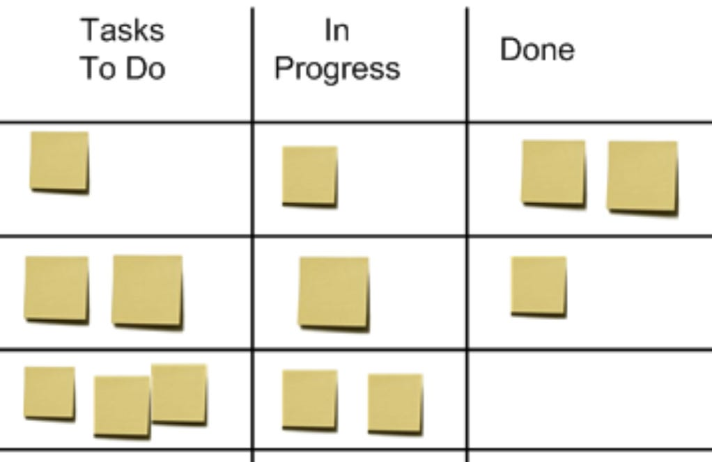
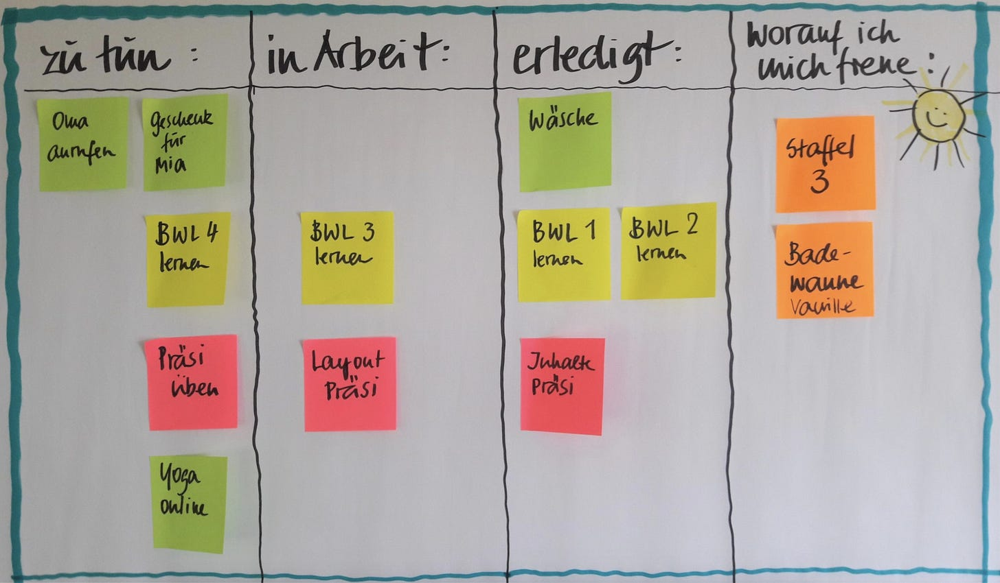
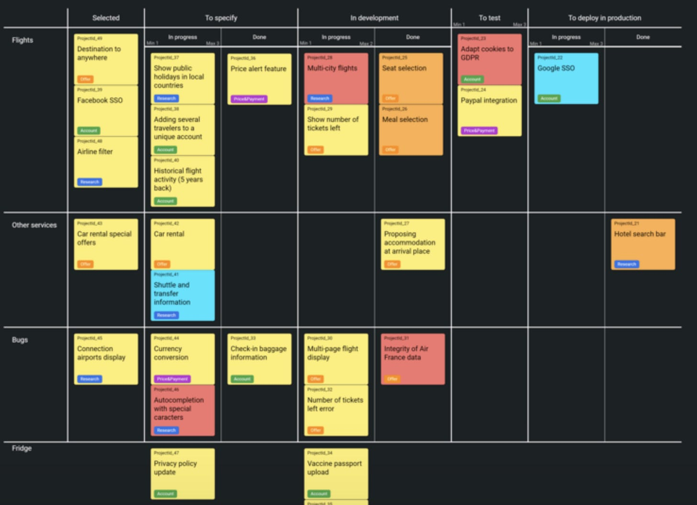
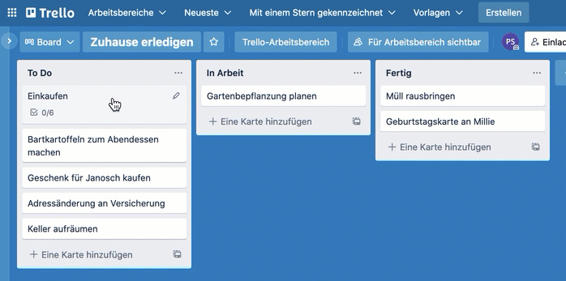

Kollaboration mit Kanbanboards
Dass es für eine flüssige Zusammenarbeit im Office mehr braucht als Meetings, Telefon, Email und einen gemeinsamen Kalender, hat sich inzwischen herumgesprochen. Hoffentlich. Dass Aufgabenboards (sog. Kanbanbords) helfen können noch nicht durchgängig. Immer mehr Unternehmen werden sich Defiziten bewusst in der Kollaboration ihrer Mitarbeiter im Office. Effizienz und Effektivität in der materiellen Produktion hat man im Griff, auch wenn es immer noch besser werden darf. Vergleichsweise ungehoben ist demgegenüber das Verbesserungspotenzial im Office.
Veränderung beginnt Kopf
Natürlich beginnt die Veränderung hier wie in der Produktion im Kopf. Erschwert wird die allerdings im Office dadurch, dass die Berge an Arbeit, die zu erledigen ist, so wenig greifbar sind. Die Arbeit liegt nicht buchstäblich auf dem Boden oder dem Tisch in Form von zu verarbeitendem Material oder physischen Waren. Arbeit im Office ist von Natur aus viel virtueller. Arbeit im Office ist Kopfarbeit. Knowledgeworker sind gefragt.
Werkzeuge wie Email oder Dateisystem auf den Computern verbessern diese Situation nicht grundlegend, sondern verschlimmern sie eher noch: Mit ihnen können Aufgaben viel schneller in viel größerer Menge generiert und verteilt werden, ohne dass die Arbeitslast sichtbar wird. Das führt geradewegs in die Überlastung vieler Mitarbeiter.
Was kann dagegen getan werden? Es braucht eine Veränderung im Kopf, in der Grundhaltung, im Verständnis für die Eigenheiten von Arbeit im Office. Sie stellt an alle besondere Anforderungen. Ausruhen ist woanders. Auch und gerade im Office kann niemand eine ruhige Kugel schieben.
Allerdings braucht es auch die Unterstützung durch geeignete Werkzeuge. Die bekannten, verbreiteten, wenn auch nicht immer geliebten sind Email, Dateisystem, Kalender und vergleichsweise neuerdings auch noch Team Chat à la Slack. Produkte, die für diese Tools stehen sind im ausufernden Microsoft 365 Universum Outlook, Sharepoint, Exchange und Teams.
MS 365 ist kein Allheilmittel
Auch wenn eine immer größere Zahl von Unternehmen in ihrer Verzweiflung zum Werkzeug-Bauchladen Microsoft 365 greifen, muss ich sagen: So einfach ist es nicht. Was vor allem dem gewünschten Effekt einer Effizienzsteigerung im Wege steht, ist ein immenser Administrationsaufwand für diesen Werkzeugkasten, ein ständiger Wandel von Umfang und Ausprägung sowie eine undurchsichtige Zahl von Verbindungen und Abhängigkeiten zwischen den Tools. Auch wenn ich Unternehmen im Microsoft 365 Dschungel gern zu Hilfe komme, Spaß macht mir das nicht immer.
Deshalb habe ich schon lange meinen Blick über diesen Tellerrand hinaus schweifen lassen. Microsoft ist auch nicht dafür bekannt, Vorreiter zu sein und mit Innovationen zu glänzen. Vor Microsoft gab es schon und neben Microsoft gibt es noch andere sehr hilfreiche Werkzeuge, die weniger unter den Belastungen leiden, die Microsoft 365 mit sich bringt. Von einem weiteren Fund, geradezu einem Schmuckstück möchte ich deshalb heute berichten. Denn ich bin begeistert und fühle mich in gewisser Weise angekommen bei einer Klasse von Werkzeugen. Zumindest für den Moment.
Arbeit sichtbar machen mit Kanbanboards
Bevor ich dir aber das neue Werkzeug vorstelle, zuerst ein kleiner theoretischer Exkurs: Was würde denn der Zusammenarbeit im Office helfen? Die einfache Antwort lautet: Überblick. Die Arbeit im Office, also all die Aufgaben und ihr Zusammenhang in Projekten und die jeweiligen Zuständigkeiten und Fristen und Abhängigkeiten müssen greifbar, sichtbar gemacht werden. Das ist im Office ein besonderes Problem, weil dort nicht einmal alle Arbeit explizite Planungsschritte durchläuft. Aufträge werden auch zwischen Tür und Angel erteilt.
Eine Projektplanung mit Tools wie Microsoft Project ist für viele Dinge, die gleichwohl mit hoher Verlässlichkeit in Kooperation bewältigt werden müssen, nicht möglich oder zu kompliziert für Mitarbeiter, deren Job die Umsetzung ist und nicht das Herumhantieren mit komplizierten Werkzeugen zur Planung.
Seit knapp 20 Jahren hat sich allerdings als Abhilfe ein Ansatz aus der Produktion mit Umweg über die Softwareentwicklung auch ins allgemeinere Büro eingeschlichen. Das ist die Visualisierung von Aufgaben auf einem Kanbanboard.
Solche Kanbanboards sind charakteristisch in Spalten gegliedert, in denen Dinge auf Kärtchen notiert sind. Diese Kärtchen werden während der Bearbeitung über das Brett von Spalte zu Spalte von denen gezogen, die daran arbeiten, je nach dem wie die Arbeit daran fortschreitet.
Die allgemeine Form ist dreispaltig und sieht so aus:

Karten kommen in der linken Spalte auf das Board im Status “zu erledigen” (To Do). Wenn die Arbeit daran beginnt, werden sie in die Spalte “in Arbeit” (In Progress) verschoben. Und wenn die Arbeit erledigt ist, landen sie in der letzten Spalte (Done).
Vorteile von Kanbanboards
- Der Vorteil gegenüber Aufgaben in Emails: Die Aufgaben sind an einem Ort im Überblick und nicht verstreut über Emails oder auch noch andere Dokumente oder Medien wie Team Chats.
- Der Vorteil gegenüber Aufgaben im Kalender: Die Aufgaben brauchen keinen fixen Zeitpunkt für die Erledigung. Das macht die Arbeit daran flexibel. Und Flexibilität ist ein hohes Gut bei der Arbeit im Office. Das sage ich, obwohl ich der Meinung bin, dass mit Kalendern noch besser umzugehen ist im Office; doch das steht nicht im Widerspruch zur vorteilhaften Flexibilität eines Aufgabenbrettes. Mehr dazu in meinem Buch Arbeiten im Office mit System.
- Der Vorteil gegenüber Aufgaben auf einer Liste: In einer Liste ist die Unterscheidung der Zustände schwierig, in denen sich Aufgaben befinden. Die Fokussierung auf das, was in Arbeit ist, fällt schwerer.
Kanbanboards räumen mit Nachteilen der anderen Planungsmedien auf. Die werden von einer Überladung mit Ansprüchen entlastet:
- Email ist ein Medium für den gelegentlichen Nachrichtenaustausch. Für enge Zusammenarbeit war Email nie gemacht. Lesenswert dazu: Eine Welt ohne E-Mail von Cal Newport.
- Der Kalender ist eine Ressource zu Strukturierung der Arbeitszeit. Er definiert vor allem, wann und wo gearbeitet wird. Dass an einem Kalendereintrag auch noch eine Aufgabe hängt ist eher nebensächlich. Wichtiger ist die Kategorie der Arbeit in einer bestimmten Zeit, z.B. “Gespräch mit einem Kunden”, “Fokuszeit”, “Meeting mit Kollegen”.
- Mit einer Liste können Aufgaben schnell erfasst werden wo immer man geht und steht. Für die wenigen Dinge, die gerade im Fokus sind, kann eine Liste für den schnellen Überblick Sinn machen. Die Spalte “in Arbeit” für sich genommen ist ja auch nur eine Liste. Kontext hingegen ist nicht Sache einer Liste.
Für die Zusammenarbeit also hat sich das Kanbanboard als universelles Werkzeug herauskristallisiert. “In voller Ausbaustufe” und mit digitaler Unterstützung bietet es auch noch viele Vorteile mehr als genannt. Die Arbeit im Office kann damit auf ein Optimierungsniveau wie die Arbeit in der Produktion kommen.
Ob so ein Aufgabenbrett analog geführt wird

oder digital

das ist zunächst nicht so wichtig. Hauptsache der Überblick steigt. Am Kanbanboard kann sich jeder für sich besser Überblick verschaffen oder ein ganzes Team.
Einfacher wird aber natürlich die Arbeit gerade mit verteilten Teams, wenn das Kanbanboard digital geführt wird. Anbieter dafür gibt es viele. Zwei werde ich gleich vorstellen.
Perspektivenvielfalt
Kärtchen in Spalten, das ist der kleinste gemeinsame Nenner der Kanbanboards. Wofür Spalten und Kärtchen jedoch stehen, darüber kann man unterschiedlicher Meinung sein. Es gibt vor allem zwei Ansätze, zwischen denen man sich entscheiden kann.
- Kärtchen stehen für Aufgaben und Spalten für Zustände: Diese Perspektive habe ich oben vorgestellt. Auf den Kärtchen steht, was zu tun ist, eine Aktivität, und die Spalten bezeichnen, mehr oder weniger detailliert, wie weit fortgeschritten diese Aktivität ist; sie stehen für einen Bearbeitungszustand. Hier drehen sich die Kärtchen um ein Verb.
- Oder Kärtchen stehen für das, was bearbeitet wird, und Spalten für Aufgaben: Diese Perspektive bietet sich an, wenn ein Auftrag/Arbeitspaket viele Aktivitäten bzw. Zustände durchlaufen muss.
Beispiele für beides im nächsten Abschnitt.
Welche Perspektive ist vorzuziehen? Das hängt von der Situation, von der Arbeit ab. Der naheliegende Ansatz ist, Kärtchen für Aufgaben zu verwenden. Der Schritt von einer Aufgabenliste zu einem Kanbanboard ist damit am kleinsten. Die To-Do-Liste heißt nicht umsonst so: Sie beantwortet die Frage, was zu tun ist. Aktivitäten sind Beschreibungen von Dingen, die zu tun sind, z.B. “Kunden anrufen”, “Angebot schreiben”, “Bericht versenden” usw.
Je größer das zu Erledigende jedoch wird, je allgemeiner die Aktivität, desto näher liegt die Perspektive, Karten für Arbeitspakete zu formulieren. Das Verb “erledigen” wird dann weggelassen und ein Substantiv-orientierter Titel steht für all das, was getan werden muss, z.B. “Angebot Kunde X”, “Artikel zum Thema Y”, “Veranstaltung Z” usw. Insbesondere, wenn solche Arbeitspakete wiederholt auftreten und die zu durchlaufenden Aktivitäten umfangreicher sind, liegt allerdings entweder ein Kanbanboard mit spezifischen Spalten nahe oder eine Zerlegung in Aufgaben, für die wieder Aktivitätskarten anlegt werden.
Trello war ein leichtgewichtiger Einstieg
Microsoft 365 enthält ein Werkzeug, mit dem Aufgabenboards angelegt werden können: den Planner. Allerdings ist der Planner nach meinem empfinden kein Tool, das sich durch Performance, Einfachheit, Leistungsstärke oder Administrationsarmut empfiehlt. Meine Kunden fragen auch selten danach. Und mir scheint, dass Microsoft darauf auch keinen Schwerpunkt hat. Wenn ein Tool von Microsoft gepusht wird, dann Teams.
Bisher habe ich stattdessen Trello von Atlassian empfohlen, wo man sich auf einen außereuropäischen Anbieter einlassen konnte. Oder ist habe Meistertask aus Deutschland als Alternative genannt. Für umfangreichere Projekte eignet sich auch KanBo.
Der Einstieg in Trello ist auch für den Unbedarften sehr einfach:
- Man registriert sich mit der Email-Adresse und bestätigt sie durch Klick auf einen Link in einer Bestätigungsemail
- Man benennt einen Arbeitsbereich für all seine Kanbanboards
- Man erstellt ein erstes Kanbanboard in diesem Arbeitsbereich
Und schon kann man ein KAnbanboard mit Spalten strukturieren und Karten platzieren. Als Beispiel hier ein Kanbanboard für die häusliche Arbeit. Ja, auch dort kann so ein Board Wunder wirken. Viele Familien mit Kindern setzen inzwischen darauf, um die Hausarbeit besser zu organisieren. Zwei Inspirationen dazu: Kanban in der Familie und Kanban mit Kinderaugen betrachtet.
Der Umgang mit dem digitalen Kanbanboard ist denkbar einfach. Es hat gegenüber einem analogen viele Vorteile, auch wenn man als Gruppe weniger gut gemeinsam davor stehen kann.

Trello bringt Kanbanborads auf den Punkt. Das hat es schon lange vor Microsoft mit seinem Planner getan. Trello ist als Tool etabliert. Viele meiner Kunden haben davon auch schon gehört, sich bisher nur nicht die Mühe gemacht, ein Produkt, das nicht aus dem Hause Microsoft stammt, näher zu betrachten.
Aber Trello ist es immer schon Wert gewesen. Nicht umsonst ist der Name fast schon ein Synonym für Kanbanboards in der ganzen Welt wie Tempo für Taschentücher es ist oder zumindest war.
Was absolut für Trello spricht ist der unverstellte Zugang und die große Einfachheit. Der Einstieg in den Umgang mit digitalen Kanbanboards ist mit Trello leicht gemacht.
Das hat mir lange gefallen und ich habe Trello genutzt, um Kanbanboards in Unternehmen einzuführen. Doch jetzt merke ich zunehmend, dass Trello seine Grenzen hat.
Was kommt nach Trello?
Wenn ich Kanbanboards in Unternehmen dahin bringen will, wo ihr Potenzial ist, dann springe ich mit Trello zu kurz. Vieles, was mit Kanbanboards grundsätzlich geht, bietet Trello nicht oder ist nicht von vornherein mitgedacht gewesen und insofern später nicht gut integriert worden.
Manchen Unternehmen kann ich mit Trello den Mund wässrig machen, sie lassen sich auf Experimente ein — und merken erst später, dass sie in einem Korsett stecken. Das möchte ich vermeiden. Andere Unternehmen bemerken schon früher, dass Trello Funktionalität fehlt (die auch Planner nicht hat) und verharren deshalb doch lieber in Tatenlosigkeit bei ihrer untauglichen Koordination mittels Email, Kalender und Excel.
Das hat mich gefuchst. Ich glaube an den Segen von Kanbanboards, möchte dafür einen einfachen Einstieg bieten, gleichzeitig jedoch meine Kunden nicht in eine potenzielle Sackgasse führen. Ein Umstieg von Trello auf ein anderes Tool sollte vermieden werden.
Lange habe ich gedacht, dass ich mir damit die Quadratur des Kreises wünsche. Doch inzwischen habe ich eine Lösung gefunden.
Wie diese Lösung aussieht, erfährst du im zweiten Teil dieser kleinen Artikelserie.
Dieser Artikel erschien zum ersten Mal in meinem Newsletter bei Substack hier im März 2022. Dort finden Sie auch weitere Artikel und können den Newsletter per E-Mail abonnieren.
Weitere Artikel

Regeln für KI im Office
ChatGPT & Co haben sich schnell in die Herzen und Alltag von vielen Menschen im Berufs- und Privatleben gespielt. Diese neuen Werkzeuge eröffnen uns viele Chancen, nicht nur effizienter zu werden, sondern auch kreativer. Aber …

KI als Copilot für die Assistenz
KI in Form von ChatGPT & Co sind hervorragende neue Werkzeuge im Office-Alltag, um produktiver und ja, auch kreativer, zu werden. Neugier statt Angst ist angezeigt im Umgang mit diesen Werkzeugen, die wie andere Werkzeuge auch …